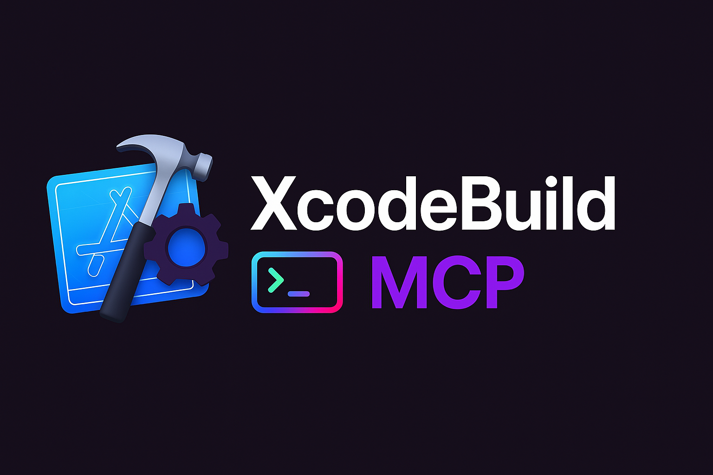

Terrain de jeu MCP
Notes sur les découvertes et compréhensions autour du Protocole de Contexte Modèle alias _MCP.
Questions
Questions ouvertes que j'ai.
- Puis-je exécuter Claude avec différentes configurations de serveur MCP ? C'est-à-dire que j'ai une configuration par projet, disons une pour mon projet Python (incluant l'accès uniquement à mon répertoire de projet Python), une pour mon projet Swift/Xcode (avec un répertoire et des outils différents).
- Test : Expérimentez avec MCP Inspector et Xcode Build MCP Server.
Accéder à un serveur MCP
Lors de la recherche et de la découverte éventuelle d'un serveur MCP pour mon cas d'utilisation, je trouve utile de les expérimenter afin de comprendre quels outils le LLM obtient. La manière la plus simple de le faire est avec le MCP Inspector.
Pour commencer :
# Assurez-vous d'avoir installé une version récente de nodeJs (dans mon cas avec nvm)
nvm use 24
npx @modelcontextprotocol/inspector node build/index.js
# Il télécharge et démarre le client UI MCP et le sert localement.
Configuration
L'Inspector conserve tout ce que vous tapez dans la barre latérale dans le localStorage, mais pour des configurations répétables, vous pouvez enregistrer un petit fichier JSON et pointer le CLI vers celui-ci :
// mcp.json
{
"mcpServers": {
"filesystem": {
"command": "npx",
"args": [
"-y",
"@modelcontextprotocol/server-filesystem",
"/Users/yourname/Projects", // lecture/écriture
"/Users/yourname/Notes", // lecture/écriture
"/Users/yourname/Code" // lecture seule ? ajoutez ',ro' si vous utilisez Docker
]
}
}
}
Ensuite, exécutez npx @modelcontextprotocol/inspector --config ./mcp.json --server filesystem
Serveurs MCP
Serveurs MCP que j'ai utilisés ou examinés :
Serveur MCP de Système de Fichiers
Configuration principale :
{
"mcpServers": {
"filesystem": {
"command": "npx",
"args": [
"-y",
"@modelcontextprotocol/server-filesystem",
"/Users/username/Desktop",
"/path/to/other/allowed/dir"
]
}
}
}
Serveurs MCP
Serveurs MCP que j'ai testés ou que je prévois de tester.
Accès au Système de Fichiers
Construction Xcode

- Active les actions de construction Xcode.
- https://github.com/cameroncooke/XcodeBuildMCP